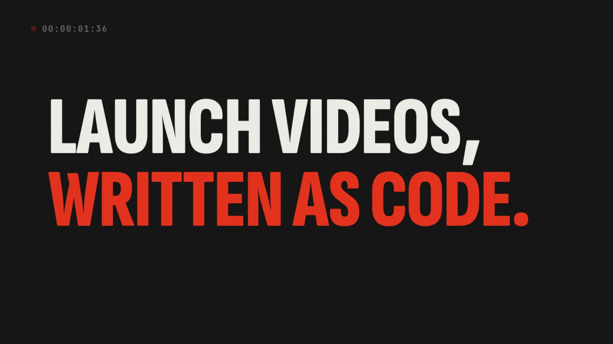

every frame on this sheet was rendered by the skill
Motion graphics, written as code.
An agent skill that turns your running app into a launch video, or an idea into a YouTube Short, one HTML frame at a time.
npx skills@latest add cskwork/motion-graphics-skill
For Claude Code, Codex, and any agent that reads SKILL.md. Read the skill
Two prints, one engine.
Both demos below are the skill's own compositions, playing live in your browser on the runtime it installs. Drag the strip: the same t always gives the same frame.

Arrow keys step one frame at 60 fps when the strip has focus.
From brief to MP4, in six frames.
The skill walks the agent through the same steps a motion designer takes, and checks the result before calling it done.
Brief
Surface, length, frame, audio. Launch videos default to 30 s at 1920×1080; Shorts to 20–30 s at 1080×1920.
Capture
Real stills and clips from the running app: iOS Simulator, Android emulator, web, or macOS. Only captured UI appears.
Beat sheet
Every second planned before code: copy, asset, move, transition, and the sound that lands on it.
Compose
One HTML page. Scenes, springs, kinetic type, and screen recordings that seek to the exact frame.
Render
Headless Chromium steps through every frame in parallel workers; ffmpeg encodes H.264.
QA
Stills at every beat, a contact sheet, safe zones, loudness. Fix, then render again.
MG.scene(0, 2.4, (t) => {
// t is the only input. No clock, no Math.random.
MG.set(title, {
y: (1 - MG.spring(t)) * 170,
o: MG.prog(t, 0, 0.12),
});
}, title);
MG.ready();motion.html. The renderer calls it once per frame.# one still per beat, to check the layout
node engine/render.mjs --html motion.html \
--config motion.json --stills 0.4,3.2,6.8 \
--stills-dir out/stills
# the full render
node engine/render.mjs --html motion.html \
--config motion.json --out out/video.mp4Two formats.
Launch video
The keynote-style launch you see on X, built from captures of your real app, never from invented screens.
- Length
- 30 s, scaled to your brief
- Frame
- 1920×1080 at 60 fps; square or vertical on request
- Source
- iOS Simulator, Android emulator, web, or macOS
- Look
- Taken from your icon, colour tokens, and type
- Beats
- Hook, promise, 3–4 features, montage, lockup
Shorts
Vertical explainers for YouTube Shorts, Reels, and TikTok, with the hook on screen in the first 0.3 seconds.
- Length
- 20–30 s
- Frame
- 1080×1920 at 60 fps
- Rules
- One idea per beat, text clear of the platform's UI
- Facts
- Every number on screen has a source
- Ending
- The last frame matches the first, so it loops
The bar it holds every video to.
The skill's own QA pass, marked up the way an editor marks a proof.
- frame 0 is already moving
- something changes every 0.8–2 s
- springs and ease-out, never linear
- copy stays up long enough to read twice
- real captures, licensed sound, sourced facts
- stills and a contact sheet checked, then render again
Install it, then ask for a video.
npx skills@latest add cskwork/motion-graphics-skill
Needs Node.js 18+, ffmpeg, and Playwright's Chromium; the skill installs Playwright in each video's work folder. Then ask in plain words: “Make a launch video for our app from the iOS simulator,” or “Make a YouTube Short explaining compound interest.” Also part of cskwork/skills.
한국어: 실행 중인 앱 화면으로 출시 영상을, 아이디어 하나로 Shorts를 만드는 에이전트 스킬입니다. 모든 장면은 시간 t에 따라 HTML로 그려지고, 같은 t는 언제나 같은 장면을 만듭니다.